Code
import os
import numpy as np
import matplotlib.pyplot as plt
from sklearn.linear_model import LinearRegression
# Set consistent style
plt.style.use('default')
fig_size_x = 7
fig_size_y = 4
plt.rcParams['font.size'] = 10In this lesson we cover:
These notes are based on chapter 2.2 of the book An Introduction to Statistical Learning with Applications in Python (James et al. 2023).
import os
import numpy as np
import matplotlib.pyplot as plt
from sklearn.linear_model import LinearRegression
# Set consistent style
plt.style.use('default')
fig_size_x = 7
fig_size_y = 4
plt.rcParams['font.size'] = 10We start with a set of \(n\) observed data points:
\[ \{ (x_1, y_1) , ..., (x_n, y_n)\}, \]
where
These data points are the training set.
We assume the relationship between \(x_i\) and \(y_i\) is perfectly captured by an unknown function \(f\), this means \(f(x_i)= y_i\).
Our goal is to obtain a good enough estimate \(\hat{f}\) of \(f\). We do this by:
selecting a general model for \(f\) (linear regression, KNN, …)
using the training set to train the model and obtain the estimate \(\hat{f}\).
The question now is: How do we select which model to use for our data (step 1)?
There is no single “best” model to apply across all problems. It’s always about evaluating tradeoffs and selecting the best model to work in a given problem for a specific dataset.
To evaluate the performance of a model on a given data set, we need some way to measure how well its predictions match the observed data.
Remember we want: \(\hat{f}(x_i)\) (the prediction on \(x_i\)) is close enough to \(f(x_i)= y_i\) (the true value).
For regression, the most commonly used way to measure how close \(\hat{f}\) is to \(f\) is the mean squared error (MSE):
\[ MSE = \frac{1}{n} \sum_{i=1}^n(y_i - \hat{f}(x_i))^2. \]
When we calculate this MSE using the training data, we obtain the training MSE. Many models are fitted by estimating coefficients that minimize the training MSE.
Below we have simulated train data based on the function \(f\) shown in black in the plot.
np.random.seed(42)
# True function: third degree polynomial
def true_f(x):
return 0.003*x**3 - 0.35*x**2 + 10*x - 20
# Create train set
n=30
x_obs = np.random.uniform(0, 100, n)
y_obs = true_f(x_obs) + np.random.normal(0, 50, n)
x = np.linspace(0, 100, 200)
plt.figure(figsize=(fig_size_x, fig_size_y))
plt.plot(x, true_f(x), 'k-', linewidth=2, label='f (true)')
plt.scatter(x_obs, y_obs, s=30, facecolors='none', edgecolors='black', zorder=5, label='Train data')
plt.xlabel('X')
plt.ylabel('Y')
plt.xlim(0, 100)
plt.ylim(-150, 600)
plt.legend(loc='upper left')
plt.tight_layout()
plt.show()
plt.close()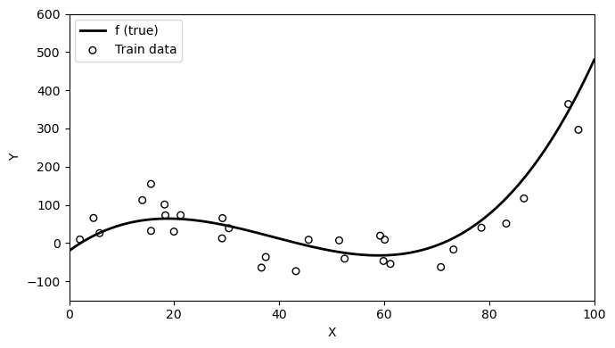
# Fit linear model
lin_model = LinearRegression()
lin_model.fit(x_obs.reshape(-1, 1), y_obs)
# Coefficients
beta_0 = lin_model.intercept_
beta_1 = lin_model.coef_[0]
eq_string = f"{beta_1:.2f}x + {beta_0:.2f}"
# Estimates
y_linear = lin_model.predict(x.reshape(-1, 1))
y_hat_obs = lin_model.predict(x_obs.reshape(-1, 1))
train_mse = np.mean((y_obs - y_hat_obs)**2)We fit a linear model to obtain the estimate \(\hat{f}(x)=\) 0.81x + 8.25. With this funciton we obtain the following residuals and a train MSE of 8614.9.
plt.figure(figsize=(fig_size_x, fig_size_y))
plt.plot(x, y_linear, color='orange', linewidth=2, label=r'$\hat{f}$')
plt.scatter(x_obs, y_obs, s=30, facecolors='none', edgecolors='black', zorder=5, label='Train data')
# Residual lines from observations to linear fit
for i, (xi, yi, yhi) in enumerate(zip(x_obs, y_obs, y_hat_obs)):
plt.plot([xi, xi], [yi, yhi], 'r--', linewidth=0.8,
label='Residuals' if i == 0 else None)
plt.xlabel('X')
plt.ylabel('Y')
plt.xlim(0, 100)
plt.ylim(-150, 600)
plt.legend(loc='upper left')
plt.tight_layout()
plt.show()
plt.close()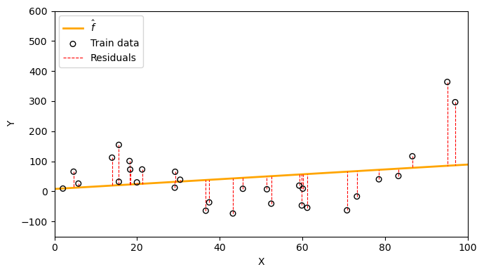
If you were going to take a big final exam in this class, how would you prefer the instructor to come up with exam questions?
On which questions would you expect to do better?
Much like this thought exercise, a model will generally perform better if we evaluate it on the training set, instead of evaluating it on previously unseen data.
Test data is data that is not part of the training dataset and is used for the purpose of evaluating our model’s performance.
Generally, we are interested in the accuracy of the predictions that we obtain when we apply our model to the test data. To estimate how well our model will perform, we calculate the MSE (or any other accuracy metric) on the test data to obtain a test MSE.
Intuitively, what do you expect to be larger, the training MSE or the test MSE?
Let’s continue our previous example. We have additional data coming from the same function that is not part of the training data. We can use this as our test data (red circles) since it was not used to fit the model.
# Create test set
n_test = 15
x_test = np.random.uniform(0, 100, n_test)
y_test = true_f(x_test) + np.random.normal(0, 50, n_test)
# Train and test data plot
x = np.linspace(0, 100, 200)
plt.figure(figsize=(fig_size_x, fig_size_y))
plt.plot(x, true_f(x), 'k-', linewidth=2, label='f (true)')
plt.scatter(x_obs, y_obs, s=30, facecolors='none', edgecolors='black', zorder=5, label='Train data')
plt.scatter(x_test, y_test, s=30, facecolors='none', edgecolors='red', zorder=5, label='Test data')
plt.xlabel('X')
plt.ylabel('Y')
plt.xlim(0, 100)
plt.ylim(-150, 600)
plt.legend(loc='upper left')
plt.tight_layout()
plt.show()
plt.close()
y_hat_test = lin_model.predict(x_test.reshape(-1, 1))
test_mse = np.mean((y_test - y_hat_test)**2)Now we can use the same linear estimate \(\hat{f}(x)=\) 0.81x + 8.25 to visualize the test residuals and calcualte a test MSE of 9169.18.
plt.figure(figsize=(fig_size_x, fig_size_y))
plt.plot(x, y_linear, color='orange', linewidth=2, label=r'$\hat{f}$')
plt.scatter(x_test, y_test, s=30, facecolors='none', edgecolors='red', zorder=5, label='Test data')
# Residual lines from test observations to linear fit
for i, (xi, yi, yhi) in enumerate(zip(x_test, y_test, y_hat_test)):
plt.plot([xi, xi], [yi, yhi], 'r--', linewidth=0.8,
label='Residuals' if i == 0 else None)
plt.xlabel('X')
plt.ylabel('Y')
plt.xlim(0, 100)
plt.ylim(-150, 600)
plt.legend(loc='upper left')
plt.tight_layout()
plt.show()
plt.close()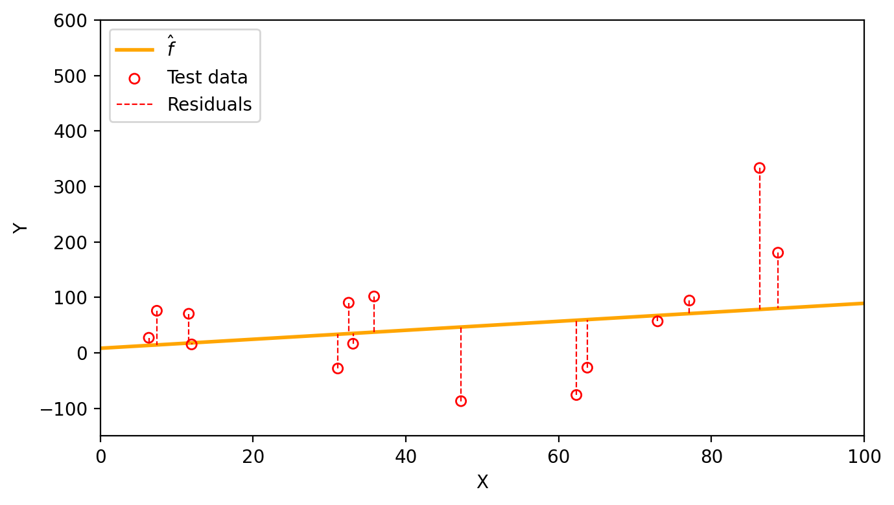
In practice, if enough observations are available, we create our training and test datasets by dividing all available observations into the ones that will be usef for training, and the ones that will be used for testing.
One instance in which it is useful to calcualte both the train MSE and the test MSE is to understand when a model is overfitting.
We say a model is overfitting the data when it has a small training MSE but a large test MSE and a lower test MSE would have been achieved by a simpler model. From the (James et al. 2023):
This happens because our learning procedure is working too hard to find patterns in the training data, and may be picking up some patterns that are just caused by random chance rather than by true properties of the unknown function \(f\).
Let’s go back to our simulated data that has been split into train data (black circles) and test data (red circles).
# Create test set
# # np.random.seed(99)
# n_test = 15
# x_test = np.random.uniform(0, 100, n_test)
# y_test = true_f(x_test) + np.random.normal(0, 50, n_test)
# Train and test data plot
x = np.linspace(0, 100, 200)
plt.figure(figsize=(fig_size_x, fig_size_y))
plt.plot(x, true_f(x), 'k-', linewidth=2, label='f (true)')
plt.scatter(x_obs, y_obs, s=30, facecolors='none', edgecolors='black', zorder=5, label='Train data')
plt.scatter(x_test, y_test, s=30, facecolors='none', edgecolors='red', zorder=5, label='Test data')
plt.xlabel('X')
plt.ylabel('Y')
plt.xlim(0, 100)
plt.ylim(-150, 600)
plt.legend(loc='upper left')
plt.tight_layout()
plt.show()
plt.close()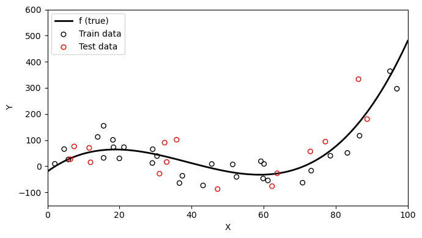
Three models were fit using the train data: a linear model (orange line), a degree 3 polyonimal (blue line), and a degree 15 polynomial (green line) as seen in the graph below.
# # Three fits
# Linear fit
lin_model = LinearRegression()
lin_model.fit(x_obs.reshape(-1, 1), y_obs)
y_linear = lin_model.predict(x.reshape(-1, 1))
# Degree 3 polynomial (matches true f)
coeffs3 = np.polyfit(x_obs, y_obs, 3)
y_poly3 = np.polyval(coeffs3, x)
# Degree 15 polynomial (overfitting)
t_min, t_max = x_obs.min(), x_obs.max()
x_norm = (x_obs - t_min) / (t_max - t_min)
x_line_norm = (x - t_min) / (t_max - t_min)
coeffs15 = np.polyfit(x_norm, y_obs, 15)
y_poly15 = np.polyval(coeffs15, x_line_norm)
# Models with train data
plt.figure(figsize=(fig_size_x, fig_size_y))
plt.scatter(x_obs, y_obs, s=30, facecolors='none', edgecolors='black', zorder=5, label='"Observed" data')
plt.plot(x, y_linear, color='orange', linewidth=2, label='Linear')
plt.plot(x, y_poly3, color='steelblue', linewidth=2, label='Degree 3 polynomial')
plt.plot(x, y_poly15, color='green', linewidth=2, label='Degree 15 polynomial')
plt.xlabel('X')
plt.ylabel('Y')
plt.xlim(0, 100)
plt.ylim(-150, 600)
plt.legend(fontsize=8)
plt.tight_layout()
plt.show()
plt.close()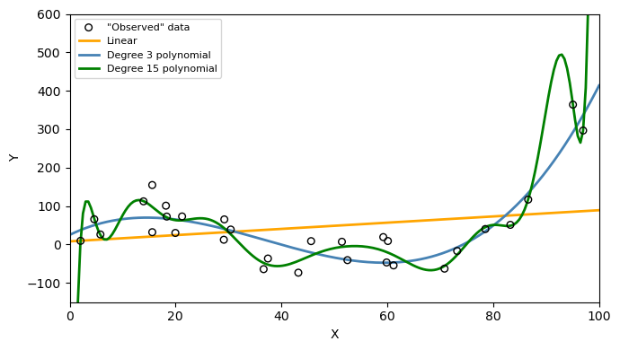
Next, the train and test MSE was calculated for each of the models. These can be seen in the graph below
# Predictions on training and test sets
# Linear
y_hat_train_lin = lin_model.predict(x_obs.reshape(-1, 1))
y_hat_test_lin = lin_model.predict(x_test.reshape(-1, 1))
# Degree 3
y_hat_train_3 = np.polyval(coeffs3, x_obs)
y_hat_test_3 = np.polyval(coeffs3, x_test)
# Degree 15 (using normalization)
x_test_norm = (x_test - t_min) / (t_max - t_min)
x_obs_norm = (x_obs - t_min) / (t_max - t_min)
y_hat_train_15 = np.polyval(coeffs15, x_obs_norm)
y_hat_test_15 = np.polyval(coeffs15, x_test_norm)
# MSEs
def mse(y_true, y_pred):
return np.mean((y_true - y_pred)**2)
train_mses = [mse(y_obs, y_hat_train_lin),
mse(y_obs, y_hat_train_3),
mse(y_obs, y_hat_train_15)]
test_mses = [mse(y_test, y_hat_test_lin),
mse(y_test, y_hat_test_3),
mse(y_test, y_hat_test_15)]
flexibility = [1, 3, 15]
colors = ['orange', 'steelblue', 'green']
plt.figure(figsize=(fig_size_x * 0.6, fig_size_y))
plt.plot(flexibility, train_mses, '-', color='gray', linewidth=2, label='Training MSE')
plt.plot(flexibility, test_mses, '-', color='red', linewidth=2, label='Test MSE')
for i, (f, c) in enumerate(zip(flexibility, colors)):
plt.plot(f, train_mses[i], 's', color=c, markersize=5)
plt.plot(f, test_mses[i], 's', color=c, markersize=5)
plt.xlabel('Model flexibility (polynomial degree)')
plt.ylabel('Mean Squared Error')
#plt.ylabel('Mean Squared Error (log scale)')
#plt.yscale('log')
plt.xticks(flexibility, ['1', '3', '15'])
plt.legend(loc='upper center')
plt.grid(False)
plt.tight_layout()
plt.show()
plt.close()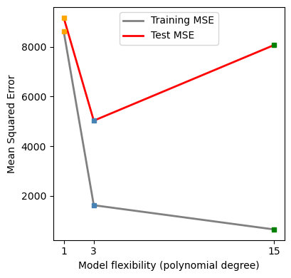
Which one of these models would you say is overfitting and why?
Does a better fit on the training data always indicate a good performance on unseen data?
We can see on the first graph that the degree 15 polynomial follows the pattern of the training data the closest. This is corresponds to this polynomial having the lowest train MSE as seen on the second graph. However, we can consider this model to be overfitting since the test MSE is (1) much higher than the train MSE and (2) higher than the test MSE of the simpler third degree polynomial. On the graph below we can see how the degree 15 polynomial fails to capture the trend in the test data.
# Models with test data
plt.figure(figsize=(fig_size_x, fig_size_y))
plt.scatter(x_test, y_test, s=30, facecolors='none', edgecolors='red', zorder=5, label='Test data')
plt.plot(x, y_linear, color='orange', linewidth=2, label='Linear')
plt.plot(x, y_poly3, color='steelblue', linewidth=2, label='Degree 3 polynomial')
plt.plot(x, y_poly15, color='green', linewidth=2, label='Degree 15 polynomial')
plt.xlabel('X')
plt.ylabel('Y')
plt.xlim(0, 100)
plt.ylim(-150, 600)
plt.legend()
plt.tight_layout()
plt.show()
plt.close()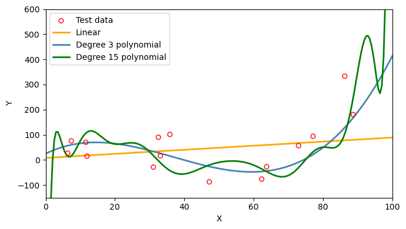
It is important to have in mind that as model flexibility increases, the training MSE will decrease, but the test MSE may not!
Model variance refers to how much our estimate of \(\hat{f}\) would change if we trained it on a different data set. If we collected a new set of data for training and re-fitted the model, would we get a similar \(\hat{f}\) or a very different one? A high-variance model is very sensitive to the specific training data used. Any slight change in the training set will produce a very different estimate \(\hat{f}\). On the other hand, a low-variance model will be relatively stable if the training set changes.
For example, suppose we crate a new training set from the same true function \(f\), as show in the graph below.
np.random.seed(21)
# Create another train set
n=30
x_obs_2 = np.random.uniform(0, 100, n)
y_obs_2 = true_f(x_obs_2) + np.random.normal(0, 50, n)
# Train and test data plot
x = np.linspace(0, 100, 200)
plt.figure(figsize=(fig_size_x, fig_size_y))
plt.plot(x, true_f(x), 'k-', linewidth=2, label='f (true)')
plt.scatter(x_obs, y_obs, s=30, facecolors='none', edgecolors='black', zorder=5, label='Train data 1')
plt.scatter(x_obs_2, y_obs_2, s=30, marker='^', facecolors='none', edgecolors='black', zorder=5, label='Train data 2')
#plt.scatter(x_test, y_test, s=30, facecolors='none', edgecolors='red', zorder=5, label='Test data')
plt.xlabel('X')
plt.ylabel('Y')
plt.xlim(0, 100)
plt.ylim(-150, 600)
plt.legend(loc='upper left')
plt.tight_layout()
plt.show()
plt.close()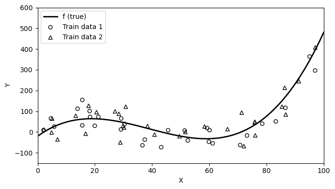
Then we can fit our models again on each of these training sets and see how much the resulting estimates \(\hat{f}\) vary:
# Fit linear model on second training set
lin_model_2 = LinearRegression()
lin_model_2.fit(x_obs_2.reshape(-1, 1), y_obs_2)
y_linear_2 = lin_model_2.predict(x.reshape(-1, 1))
# Fit degree 15 on second training set
x_norm_2 = (x_obs_2 - t_min) / (t_max - t_min)
coeffs15_2 = np.polyfit(x_norm_2, y_obs_2, 15)
y_poly15_2 = np.polyval(coeffs15_2, x_line_norm)
# Linear fits
fig, ax = plt.subplots(figsize=(fig_size_x, fig_size_y))
ax.scatter(x_obs, y_obs, s=30, facecolors='none', edgecolors='black', zorder=5, label='Train data 1')
ax.scatter(x_obs_2, y_obs_2, s=30, facecolors='none', edgecolors='black', zorder=5, marker='^', label='Train data 2')
ax.plot(x, y_linear, color='orange', linewidth=2, label='Linear fit 1')
ax.plot(x, y_linear_2, color='maroon', linewidth=2, label='Linear fit 2')
ax.set_xlabel('X')
ax.set_ylabel('Y')
ax.set_xlim(0, 100)
ax.set_ylim(-150, 600)
ax.set_title('Linear')
ax.legend(loc='upper left', fontsize=8)
plt.tight_layout()
plt.show()
plt.close()
# Degree 15 fits
fig, ax = plt.subplots(figsize=(fig_size_x, fig_size_y))
ax.scatter(x_obs, y_obs, s=30, facecolors='none', edgecolors='black', zorder=5, label='Train data 1')
ax.scatter(x_obs_2, y_obs_2, s=30, facecolors='none', edgecolors='black', zorder=5, marker='^', label='Train data 2')
ax.plot(x, y_poly15, color='forestgreen', linewidth=2, label='Degree 15 fit 1')
ax.plot(x, y_poly15_2, color='darkviolet', linewidth=2, label='Degree 15 fit 2')
ax.set_xlabel('X')
ax.set_ylabel('Y')
ax.set_xlim(0, 100)
ax.set_ylim(-150, 600)
ax.set_title('Degree 15')
ax.legend(loc='upper left', fontsize=8)
plt.tight_layout()
plt.show()
plt.close()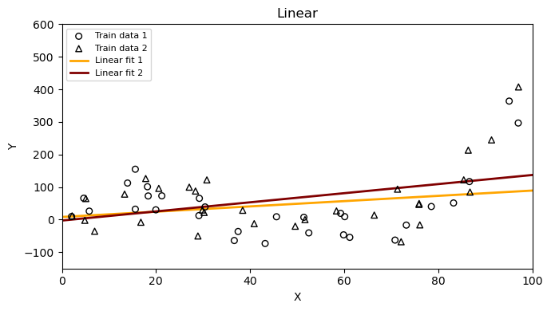
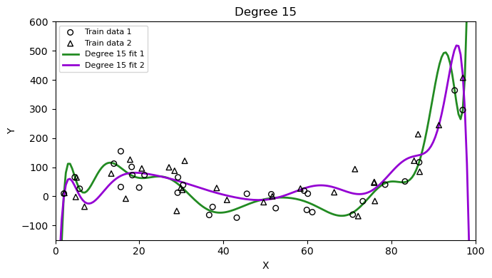
Which method has higher variance, the linear model or the degree 15 polynomial? Why?
Model bias refers to the error introduced by the assumptions built into the model, as the assumptions might not reflect the complexity of a real-life problem. A high-bias model will be systematically wrong, no matter how much training data we give it. For example, if we fit a linear model to data that is truly cubic, the linear model simply cannot capture the true shape of \(f\). A low-bias model’s assumptions are flexible enough to approximate the true shape of \(f\).
We are interested in model variance and bias because, roughly speaking and from a theoretical perspective, the expected test MSE can be decomposed as
\[\text{expected test MSE} = \text{model variance}^2 + \text{model bias} + \text{irreducible error}.\]
The irreducible error is the variance associated with the error term, \(\text{Var}(\epsilon)\).
Though the formal statement and computation of this formula are beyond the scope of the course, intuitively understanding the three components on the right hand side can help us understand important behaviour different models have relative to a variety of training sets. So let’s look at it more closely:
This is where the bias-variance tradeoff comes in (James et al. 2023):
as a general rule, as we use more flexible methods, the variance will increase and the bias will decrease. The relative rate of change of these two quantities determines whether the test MSE increases or decreases. […] The challenge is finding a method for which both the variance and the squared bias are reasonably low.
We can intuitively see the relative rate of change between variance and bias in our previous test MSE graph:
plt.figure(figsize=(fig_size_x * 0.6, fig_size_y))
plt.plot(flexibility, train_mses, '-', color='gray', linewidth=2, label='Training MSE')
plt.plot(flexibility, test_mses, '-', color='red', linewidth=2, label='Test MSE')
for i, (f, c) in enumerate(zip(flexibility, colors)):
plt.plot(f, train_mses[i], 's', color=c, markersize=5)
plt.plot(f, test_mses[i], 's', color=c, markersize=5)
plt.xlabel('Flexibility (degree)')
plt.ylabel('Mean Squared Error')
#plt.ylabel('Mean Squared Error (log scale)')
#plt.yscale('log')
plt.xticks(flexibility, ['1', '3', '15'])
plt.legend(loc='upper center')
plt.grid(False)
plt.tight_layout()
plt.show()
plt.close()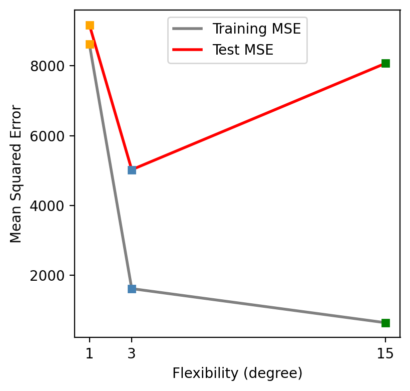
As we increase the model flexibility (in this example controlled by the degree of the polynomial used to compute \(\hat{f}\)), the bias decreases faster than the variance increases and the test MSE drops. Eventually, increasing the flexibility does little to keep reducing the bias, but starts to significantly increase the variance, resulting in the test MSE to go back up again.
Looking at the test MSE plot, which model would you select and why? Would you consider evaluating polynomilas with other degrees?